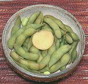

|
Edamame (Soybeans) in the PodChina - Sichuan - Mao Dou (China); Edamame (Japan) | ||||
| Makes: Effort: Sched: DoAhead: |
1 # * 10 min Yes |
These beans are familiar to most Americans as an appetizer served in Japanese restaurants, but they are also enjoyed in China, particularly in Sichuan. | |||
|
1 1/3 1 1/2 |
# in t t |
Edamame Pods (1) Ginger Root Salt Sichuan Pepper (2) |
Make - (1-1/2 hrs - 15 min work)
|